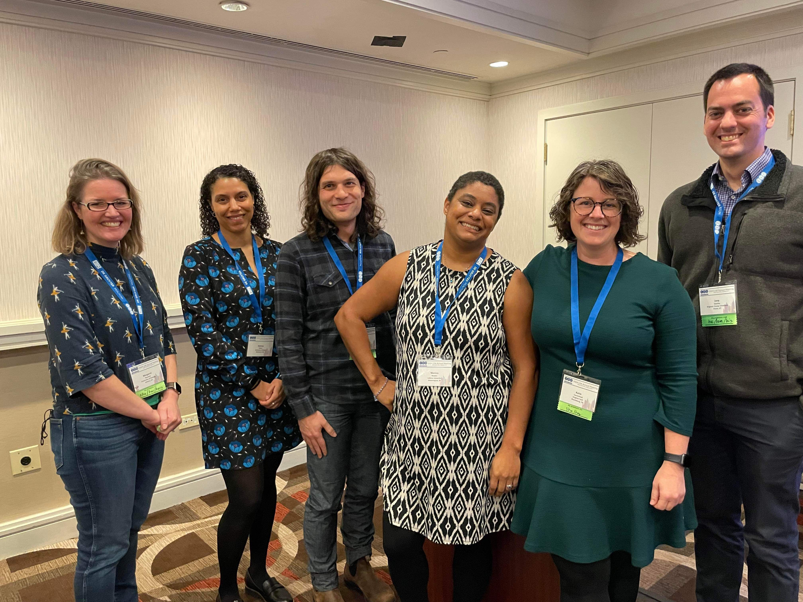

This week I’m in New York City at annual meetings of the Linguistic Society of America and the American Dialect Society. I gave three talks, which you can download here.
LSA talk “Missionary Voice”
- Here is the actual powerpoint file. In the notes for each slide you’ll see the actual script I read from. And since the audio is embedded into the file, if you enter presentation mode and mouse over a quote, you’ll hear the actual audio.
- Here is just a PDF of the slides with the script, but without audio embedded.
- And here is just a regular PDF of the slides.
My first talk is “The Missionary Voice: Perceptions of an Emerging Register”. This talk is largely the produce of the first author, Josh Stevenson’s (who couldn’t make it to the conference) undergraduate honor’s thesis; Wendy Baker-Smemoe, who is another co-author, and I served on his thesis committee. Josh studied the way Latter-day Saint missionaries speak and are perceived.
In the first part of the study, we draw from data I collected where we asked lots of people about what they think about missionaries’ speech. We conclude that most people affiliated with the Church of Jesus Christ of Latter-day Saints have a pretty good idea about what missionary voice is and associate it with a variety of meanings.
In the second part of the study, Josh gathered audio from missionaries and a control group and played them for people, asking them to say whether they think the speaker was a missionary or not. In the aggregate, people did no better than chance. But, we looked at the voices that wre overwhelmingly thought of as missionaries or not and found that missionaries tended to have more pauses, spread lip articulation, slower speech, features that index younger, Western speech like retracted [æ] and creak, and otherwise sounded professional and formal. Voices that were not thought of as missionaries were ones that had false starts and disfluencies, informality, and potentially features of other varieties of English.
We conclude by saying that Missionary Voice appears to be an emerging register and may become stronger or more exaggerated in the future.
LSA talk on Park City English
Immediately after that talk in the same session, I presented a talk called “Exploring the Effects of Cross-Cultural Variation and Tourism in Utah English.” This is largely the work of the first author, Zoe Eldredge, who conducted this study as part of directed research with me, but who could not make it because of health issues.
The premise of the talk is that Park City in Utah may have its own variety of English due to its tourism industry. It is different enough from the rest of northern Utah in many ways, and anecdotal there are least are perceptions of a distinct variety.
In the first study, we see whether listeners can hear a difference between Parkites and other northern Utahns. Turns out they can’t. Or at least we didn’t find good evidence that they could. In the second study, we looked at actual production data from Parkites. They’re what you’d expect from what has been described elsewhere in Utah, and there were no measurable differences from the control group, at least nothing larger than regular inter-speaker variation. So, null results on both studies.
But, null results are not uninteresting. We wonder now why there are so many perceptions of Parkite speech being different, even though it doens’t appear to be measurable in any way. We suggest that this might be the very beginning of how indexicality develops. This might be interesting to consider how such a bias may affect perception in places where there are measurable linguistic differences.
ADS panel on change in American English dialects
On Friday, I lead a panel with Monica Nesbitt and Peggy Renwick called “Movement, Economy, Orientation: 20th Century Shifts in North American Language.” The premise of the panel is that lots of studies are starting to show that the Boomer–Gen X transition period appears to be a pivotal moment in the history of American English. Specifically, Boomers appear to have the most canonical versions of certain shifts (like the Northern Cities Shift and the Southern Vowel Shift). Alternatively, Boomers are the last generation to retain historic features. This panel is a precursor to a volume we are editing that will be published in December 2024 as part of the Publications of the American Dialect Society series.
- Here is a PDF of the slides.
